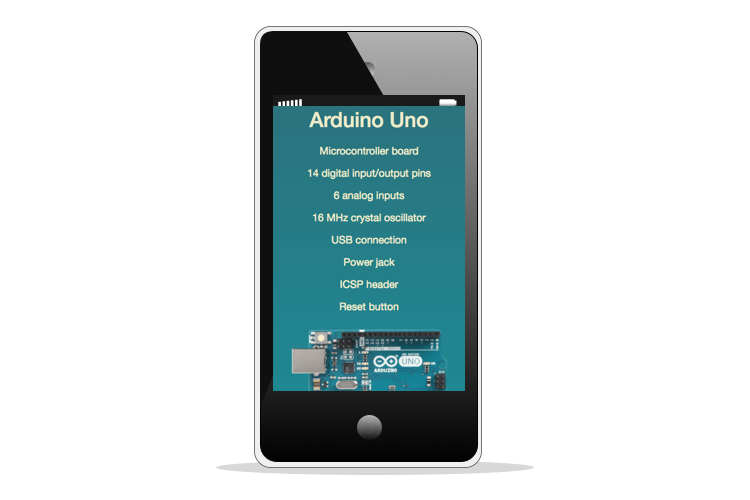
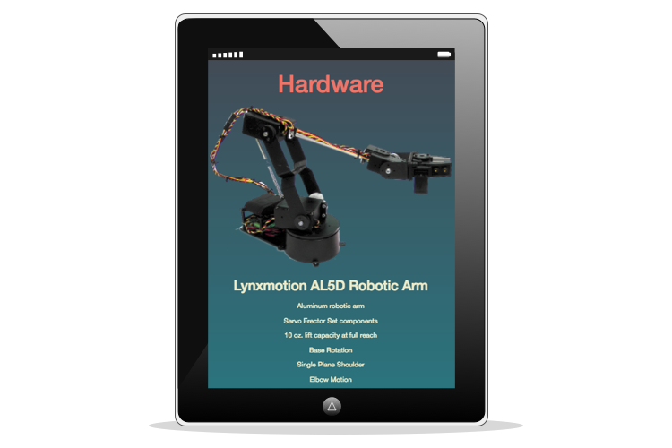
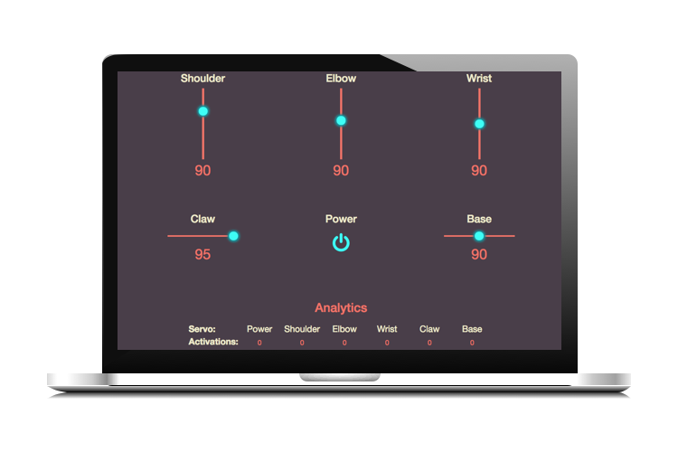
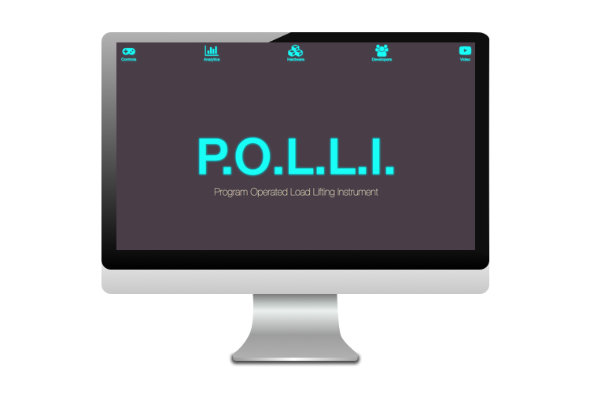

Daniel Lopez
Web Designer
&
Web Developer
Projects
P.O.L.L.I. the robotic arm





Website
Github
P.O.L.L.I is an interactive robotic arm that can be controlled through a mobile-friendly website or by hand motion. The project was proposed by John Dowd during week 5 of the Javascript course at Epicodus. Pete Lazuran, Isabella Abatgis, and myself quickly signed on as members.
The project was created using Johnny-Five to write the robotic-specific methods in JavaScript and using express as middleware to make the user-interface.